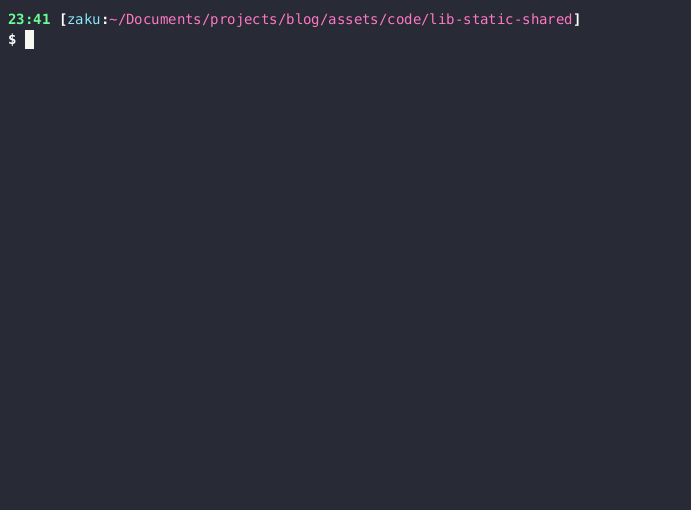

As a note to myself, I would like to explore how to generate a symbols file but ship to the customer a stripped binary lacking of any debugging symbols but still be able to debug customer’s issue.
When compiling, developers can enable a debug flag to generate debug information in the binary. Debug information is generated by the compiler or assembler to produce information that is useful to debuggers such as GDB and retains symbol names (such as variable and function names) in the binary. While I am not too familiar with what sorts of data is stored in the debug info, having the ability to step through a code and have access to the symbol table is what I am going to try to achieve for the purpose of today’s blog post.
Sample Code
Gist: https://gist.github.com/zakuArbor/a3fcaef1aa2e9a271a8f3bc6c542aa15
Files:
- cat.c
- goose.c
- main.c
cat.c
#include <stdio.h>
void meow() {
printf("The Cat Meows at its friend\n");
}
goose.c
#include <stdio.h>
#define PI 3.14
#define Square(x) ((x)*(x))
void honk() {
double area = PI * Square(9); //area = pi * r^2
printf("The Goose Honks the area of the circular pond: %.2f m^2\n", area);
}
main.c
void honk();
void meow();
int main() {
honk();
meow();
return 0;
}
Steps
1. Compile (no linking)
gcc -g -c main.c
gcc -g -c goose.c
gcc -g -c cat.c
2. Create a static library (optional)
ar -rs libanimal.a cat.o goose.o
3. Create debug binary
gcc -g main.o -L. -lanimal -o prog-g
4. Create stripped binary (production)
cp prog-g prog
objcopy --only-keep-debug prog prog.sym
objcopy --strip-debug prog
Verify binary
Debug builds always are larger in size because it contains extra debugging information and the symbol names are not mangled.
1. File Sizes: Debug build should be larger in size
$ stat --format="%s %n" prog*
24888 prog
26976 prog-g
15600 prog.sym
As one can see, the stripped binary is smaller in size because all debugging symbols were removed. One could go to the extra step and strip all symbols to make the binary even more smaller:
$ cp prog-g prog-s #will become the completely stripped version
$ strip -s prog-s
$ stat --format="%s %n" prog* | sort
15024 prog-s
15600 prog.sym
24888 prog
26976 prog-g
2. Symbols: Debug build should contain symbol while production build should have no symbols
$ objdump -g prog-g | grep honk
<3b> DW_AT_name : (indirect string, offset: 0x4b): honk
<185> DW_AT_name : (indirect string, offset: 0x4b): honk
0x00000040 3d783836 2d363420 2d670068 6f6e6b00 =x86-64 -g.honk.
$ objdump -g prog | grep honk
$ objdump -g prog-s | grep honk
As expected, only the debugged version contains the symbol honk in the binary.
3. GDB
As debug information was stripped from the executable, one should not see any source code as seen below:
$ gdb prog --silent
Reading symbols from prog...
This GDB supports auto-downloading debuginfo from the following URLs:
https://debuginfod.fedoraproject.org/
Enable debuginfod for this session? (y or [n]) n
Debuginfod has been disabled.
To make this setting permanent, add 'set debuginfod enabled off' to .gdbinit.
(No debugging symbols found in prog)
(gdb) list main
No symbol table is loaded. Use the "file" command.
Add Debug Symbols to Non-Debug Builds
To create a non-debug build, we removed the symbols from the binary. Before we removed the symbols, we stored them in a symbol file. We can utilize this symbol file to add debug information back to the non-debug build as seen below:
$ objcopy --add-gnu-debuglink=prog.sym prog
$ gdb prog --silent
Reading symbols from prog...
Reading symbols from /home/zaku/Documents/projects/blog/assets/code/lib-static-shared/prog.sym...
(gdb) list main
1 void honk();
2 void meow();
3 int main() {
4 honk();
5 meow();
6 return 0;
7 }
(gdb) list honk
1 #include <stdio.h>
2 #define PI 3.14
3 #define Square(x) ((x)*(x))
4 void honk() {
5 double area = PI * Square(9); //area = pi * r^2
6 printf("The Goose Honks the area of the circular pond: %.2f m^2\n", area);
7 }
(gdb)
The same can be done to the binary that was entirely stripped of all symbols (prog-s).
Summary
To create a debug and non-debug build, do the following:
- Compile with debug flag (`gcc -g file.c -o file-g)
- Create stripped binary
cp prog-g prog objcopy --only-keep-debug prog prog.sym objcopy --strip-debug prog2.5 Strip all symbols (optional)
strip -s prog - Recover debugging symbols
objcopy --add-gnu-debuglink=prog.sym prog
Here’s a gif using asciinema and agg:
